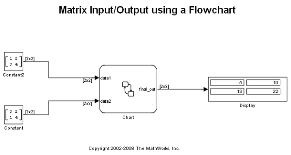
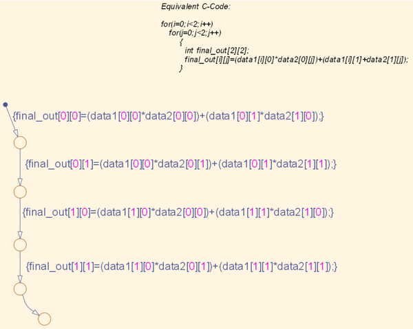

行列の入出力
このデモでは、Simulink® から行列入力信号を受け取り、行列信号を Simulink に出力することができる、Stateflow® の機能を示します。この例では、[2x2] 行列を別の [2x2] 行列と乗算して、[2x2] 出力行列を得ます。フロー チャートを使用して計算を実行しますが、これは、シミュレーション時間の長さがわずか 1 タイム ステップである理由でもあります。
このグラフィカル フロー チャートは、C 言語で以下の入れ子になったループを記述することに相当します。
for(i=0; i<2; i++) { for(j=0; j<2; j++) { int final_out[2][2]; final_out[i][j] = (data1[i][0] * data2[0][j]) + (data1[i][1] + data2[1][j]); } }
[final_out] は、このデモにおける Stateflow 出力信号です。
 